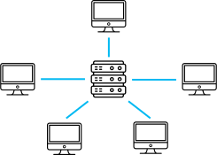
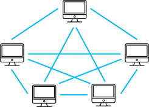
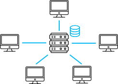
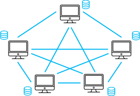
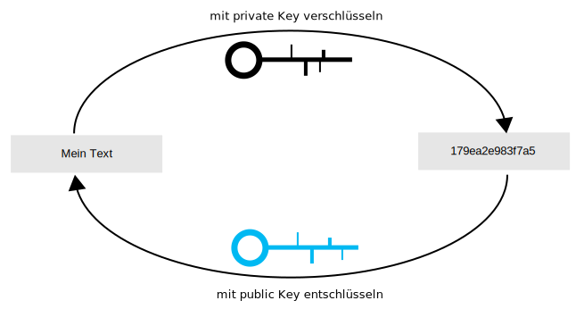

Chat
Aktuell nutzen wir eine public blockchain (jeder darf schreiben und lesen) und speichern
on-chain (alle Daten in der Blockchain).
Damit kannst du aktuell jede Nachricht lesen, die jemand in diesem Netzwerk schickt.
{{ convo.name }}
Aktivitäten im Netzwerk
{{ levelList[selectedLevel][selectedMission] }}
Willkommen bei unserer Blockchain-Simulation.
Du wirst hier interaktiv Teilnehmer eines Chat-Netzwerks sein.
Dieses läuft tatsächlich auch auf einer Blockchain.
Du wirst jederzeit die Gelegenheit haben, mit anderen zu chatten.
Du kannst währenddessen Missionen erfüllen, und dir eine echte Blockchain aus verschiedenen
Winkeln anschauen.
Am Ende jeder Mission hast du unten einen Button mit "Mission abschliessen".
Also worauf wartest du? Let's go!
|
Unser Chat-System läuft auf einem verteilten System. Aber was ist das? Unten siehst du eine klassische Client-Server-Architektur wie du sie aus Chat-Apps wie WhatsApp kennst. Normalerweise schicken wir die Nachrichten an einen Server und dieser leitet sie dann weiter. |
Bei uns sind das anders aus. Wie du siehst, gibt es kein Server. Jeder kommuniziert
direkt mit jedem. Da wir alle gleichwertig in diesem Netzwerk sind, reden wir gar nicht mehr von Client oder Server, sondern von Peers. Wir sind alle Peers, weswegen uns das zu einem Peer-to-Peer-Netzwerk macht aka P2P. |
|  |  |
|
Tatsächlich ist das eine gute Frage und gar nicht so einfach. Schauen wir uns da noch einmal die klassische Client-Server-Architektur an. Hier werden alle Daten auf dem Server in einer zentralen Datenbank gespeichert. |
Und hier speichern wir tatsächlich alle Daten auf allen
Peer-Rechnern. Diese Redundanz ist bewusst erzeugt, um das System stabiler zu machen. Fällt ein Rechner aus, sind genug andere noch da. Doch das Ganze hat auch Nachteile. |
|  |  |
|
Auch das ist eine sehr gute Frage. Bei klassischen Client-Server-Architekturen sind die Daten zentral auf dem Server. Wir vertrauen also diesem Server, dass die Daten echt sind. Das machen wir sehr häufig. Wir vertrauen Services wie Amazon, PayPal, Instagram tagtäglich. |
Was ist aber wenn wir keine zentrale Instanz haben, der wir vertrauen können? Das P2P Network erzeugt bewusst Redundanz, sodass wir nicht einer einzelnen Person vertrauen müssen. Stattdessen vertrauen wir dem gesamten System und überprüfen uns gegenseitig. Das bedeutet aber auch, dass wir uns auf jede noch so kleine Information gemeinsam einigen müssen (Konsens). |
|
Ein Hash ist eine Möglichkeit eine Zeichenkette (String) zu komprimieren. Wenn wir einen String hashen, bekommen wir immer einen neuen String einer fixen Länge raus. Dabei ist egal, wie lang der anfängliche String ist, es kommt immer die gleiche Länge vom Hash raus. Hashes haben dabei drei wesentliche Eigenschaften:
|
Der Vorteil ist, Hashes sind leicht zu speichern und man kann so Daten
überprüfen. Änderst du nur einen Buchstaben im orginalen String, sieht der Hash komplett anders aus. Willst du es ausprobieren, z.B. SHA1 (Secure Hash Algorithm): Hash: {{ hash(hashInput) }} |
|
Die symmetrische Verschlüsselung verschlüsselt und entschlüsselt mit
dem gleichen Schlüssel. Das ist ähnlich wie bei einem Haustürschloss. Du kannst deinen Schlüssel nutzen, um die Tür aufzumachen und abzuschliessen. |
Bei einer asymmetrischen Verschlüsselung hast du einen privaten Schlüssel
(private key) und einen öffentlichen (public
key). Um ein solches Schlüssel-Paar zu erzeugen, generierst du einen private key und leitest einen public key davon ab. Man kann von einem public key nie den dazugehörigen private key erraten. |
|
Nachricht:
Dein Schlüssel: Verschlüsselte Nachricht: {{ encrypt(symText, symKey) }} Zum Entschlüsseln:
Verschlüsselte Nachricht:
Dein Schlüssel: Entschlüsselte Nachricht: {{ decrypt(symEncrypt, symDecryptKey) }} |
Nachricht:
public key: {{ keyPairOutput.publicKey }} Verschlüsselte Nachricht: {{ asymOutputText }} Zum Entschlüsseln:
private key:
{{ keyPairOutput.privateKey }}
entschlüsselt: {{ asymInputText }} |
Du kannst das mal interaktiv ausprobieren, indem du eine Nachricht mal schreibst.
Diese Nachricht wird als eine Transaktion geschickt. Dabei werden weitere Informationen, wie Sender, Empfänger, Zeitstempel, ... angehängt.
Wie du aus dem Unterricht gelernt hast, wird auch der Hash erzeugt und mit deinem private key verschlüsselt.
Dabei sieht die Struktur wie folgt aus:
- Orginale Transaktion
{
Absender: "{{ publicKey }}",
Empfänger: "all",
Nachricht: "",
Kosten: {{ coins }}
}
- mit Zeitstempel dazu
{
sender: "{{ publicKey }}",
recipient: "all",
message: "{{ messageSimulation }}",
coins: {{ coins }}
time: {{ timestamp() }}
}
- Hash hinzufügen
{
sender: "{{ publicKey }}",
recipient: "all",
message: "{{ messageSimulation }}",
coins: {{ coins }}
time: {{ timestamp() }}
hash:{{ hashTx() }}
} - Hash signieren mit deinem private key
{
sender: "{{ publicKey }}",
recipient: "all",
message: "{{ messageSimulation }}",
coins: {{ coins }}
time: {{ timestamp() }}
hash:{{ hashTxSigned() }}
} - ins Netzwerk
|
Dazu müssen wir uns nur unser P2P (Peer-to-Peer)-Netzwerk anschauen. Wir haben hier extra Redundanz, sodass das System robuster wird. Also hat auch jeder eine vollständige Kopie der Daten (also ein Backup). Das kann natürlich ziemlich schnell, ziemlich gross werden, weswegen es auch inzwischen auch andere Lösungen gibt. In unserem Fall speichern wir jede Transaktion bei jedem Peer. Das heisst, du kannst auch immer sehen, wer wem was geschrieben hat. |
|
Bisher hast du einiges gelernt zu unserem P2P-Netzwerk und zu Hashes und
Verschlüsselung. Nachrichten sind immer Transaktionen und enthalten viele Informationen und den signierten Hash. Wie du ebenfalls zuvor gesehen hast, müssen wir uns in einem P2P-Netzwerk auf jede Information einigen. Das würde sehr viel Abstimmung bedeuten. Stattdessen sammeln wir neue Daten einfach in einem Pool (unconfirmed transactions). Nun kann sich jemand der Aufgabe stellen, einige dieser Transaktionen zu sammeln und zur Abstimmung bringen. Der Vorgang einen Block zur Abstimmung zu bringen, benötigt viel Aufwand. Das siehst du gleich. |
|
Ein Block ist eine Ansammlung an Transaktionen. Sobald ein Block bestätigt ist, hat jeder Teilnehmer im P2P-Netzwerk die Info, dass dieser Block wahre Daten enthält. Ein Block besteht dabei aus einem block body und block header. Der Body enthält nur die Liste der Transaktionen. Bisher haben wir gelernt, dass wir mit einem Hash überprüfen können, ob ein String verändert wurde. Wenn wir diesen Hash signieren, können wir sogar sicherstellen, dass niemand den Hash ändern kann. Aber wie können wir feststellen, dass niemand einen Block ändern kann? Dazu müssen wir von allen Transaktionshashes, einen grossen Hash (block hash) bauen. Damit können wir super leicht feststellen, ob jetzt jemand auch nur irgendetwas verändert hat. Diesen speichern wir im block header ab. Wie wir jetzt aber sicherstellen können, dass niemand diesen block hash verändert, siehst du in der nächsten Mission. Du kannst dir aber zuerst mal einen x-beliebigen Block anschauen. |
Blockhash: {{ selectedBlock.h }}
Blocknummer: {{ selectedBlock.b }}
Anzahl an Transaktionen: {{ selectedBlock.l.length }} gefunden von: {{ getNickname(selectedBlock.r) }} gefunden um: {{ formatTime(selectedBlock.t) }} Vorheriger Blockhash: {{ selectedBlock.p }}
{{ getNickname(message.s) }} →
{{ getNickname(message.r) }}
{{ message.m }}
{{ message.c }} Coins
{{ formatTime(message.t) }} |
|
Jeder Teilnehmer kann sehr leicht prüfen, ob eine Transaktion gültig ist.
Gültige Transaktioneen, landen die Transaktionen in einem Pool (unconfirmed transaction pool). Jetzt muss sich jemand der Aufgabe stellen, einen Block zu finden. Dabei sucht die Person die Lösung einer kryptographischen Challenge. Mit dem Hash der Transaktionen zusammen werden einige Informationen aus dem block header weiter gehasht. Darunter sind vorallem der Blockhash des vorherigen Blocks und Zeitstempel. Die kryptographische Challenge liegt darin eine Zeichenkette (Nonce) in Block hinzuzufügen, sodass der Blockhash mit Nullen beginnt. Jetzt muss jemand eine x-beliebige Zeichenfolge zu den bestehenden Daten zu finden, sodass der Hash mit x Nullen beginnt. Je mehr Nullen am Anfang gefordert sind, desto schwieriger wird es. Probier es doch mal aus! Einfaches Beispiel: Wenn ein Blockhash mit einer Null beginnen soll, braucht man ca. 16 Versuche. Wenn ein Blockhash mit drei Nullen beginnen soll, braucht man ca. 4096 Versuche. Bei sechs Nullen, sind es schon über 16 Millionen. Das Bitcoin-Netzwerk verlangt aktuell 19 Nullen am Anfang! |
Blockhash: {{ simulateBlockHashCalculation(currentBlock, nonceInput) }}
Blocknummer: {{ currentBlock.b }}
Anzahl an Transaktionen: {{ currentBlock.l.length }} Vorheriger Blockhash: {{ currentBlock.p }} Nonce:
{{ getNickname(message.s) }} →
{{ getNickname(message.r) }}
{{ message.m }}
Hash:
{{ message.h }} |
|
Wie du gesehen hast wird ein Hash über block header und body gebildet. Im Block-Header ist jeweils eine Referenz zum vorherigen Block. Dadurch werden die Blöcke "verkettet". Vorteil des ganzen ist, es noch schwerer zu machen, die Historie zu ändern. Es ist schon so gut wie unmöglich einen Block zu ändern. Falls ein Angreifer einen alten Block ändern möchte, müsste er alle folgenden Blöcke neu finden. Das heisst, dadurch wird das System nochmals gestärkt. |
{{ block.h }}
#{{ block.b }}
{{ formatTime(block.t) }}
Vorheriger Hash: {{ block.p }} |
|
Das ist eine gute Frage. Wir nutzen eine public blockchain, also jeder kann teilnehmen. Das heisst auch, dass jeder die gesamte Historie sehen kann. Da deine Nachrichten bisher in Klartext verschickt worden, kann jeder deine Nachrichten lesen. Nun können wir uns den Trick der asymmetrischen Verschlüsselung zu nutze machen. Statt dass du selbst deinen private Key zum Verschlüsseln nimmst, nimmst du jemand anders sein Key. Genauer gesagt, den public key deines Empfängers. Denn damit kann nur er mit seinem private key deine Nachricht entschlüsseln. |

unverschlüsselt
Nachrichten
verschlüsseln
|
|
Auch das ist wieder eine fantastische Frage. Blöcke suchen, heisst diesen Nonce zu finden. Wir sprechen hier vom sogenannten Mining. Du probierst x-beliebige random Zeichenfolgen, um den Nonce zu finden. Das ist aber auch wahnsinnig rechenintensiv. Denn je Power du hast, desto wahrscheinlicher ist es, dass du einen Block findest. Dafür bekommst du natürlich auch eine Belohnung. Im Bitcoin-Netzwerk würdest du über 6 Bitcoin pro Block bekommen. Du musst das jetzt aber deinen Kosten gegenüber stellen (Strom + Hardware). Das kann sehr schnell, verdammt teuer werden und sich für dich nicht mehr lohnen. Das Bitcoin-Netzwerk verbraucht nur durch Mining soviel Strom wie die gesamten Niederlande! Klimatechnisch eine reinste Katastrophe.
Nicht
suchen
Nach Blöcken
suchen
|
Blockhash: {{ simulatePoW(currentBlock) }}
Blocknummer: {{ currentBlock.b }}
Anzahl an Transaktionen: {{ currentBlock.l.length }} Vorheriger Blockhash: {{ currentBlock.p }} Nonce:
{{ getNickname(message.s) }} →
{{ getNickname(message.r) }}
{{ message.m }}
Hash:
{{ message.h }} |
|
Die Frage darfst du dir selbst beantworten. Denn das ist gar nicht so trivial und viele vergessen das. Blockchains haben folgende Eigenschaften:
|
Denkst du, du kannst die Frage beantworten Kann ich löschen: Deine Antwort ist: {{ deleteChoice === 'n' ? 'richtig' : (deleteChoice === 'y' ? 'falsch' : '') }} {{ deleteChoice === 'n' ? 'Das sollte dir gut bewusst sein. Jede deiner Nachrichten wird für immer bleiben.' : '' }} |
|
Konsens referenziert generell erstmal nur darauf, sich zu einigen. Insbesondere auf Daten zu einigen. Wir haben hierzu den Proof-of-Work Algorithmus:
|
Aber es gibt immer mehr Konsensalgorithmen. Insbesondere da der Proof-of-Work sehr rechenintensiv ist. Die neue Ethereum-Blockchain nutzt einen Proof-of-Stake. Das heisst Konsens finden besondere Nutzer, die dafür mit ihrem Vermögen haften. Es gibt noch sehr viele mehr. Immer an Use Case und Situation angepasst. |
|
Wie du gelernt hast, ist die Blocksuche die Suche nach der Lösung zur
Challenge. Wichtig dabei, es ist sehr schwer die Lösung zu finden, aber sehr leicht sie zu verifizieren. Das heisst also, dass wer als erstes diesen Nonce findet, dieser Miner den Block gefunden hat. Idealerweise sind in solch öffentlichen Netzwerken, die Schwierigkeitsstufen dynamisch geregelt. Das heisst, je weniger Miner, desto einfacher wird die Challenge. Andernfalls, würden Transaktionen ewig brauchen, bis sie bestätigt werden. |
Blockhash: {{ simulatePoW(currentBlock) }}
Blocknummer: {{ currentBlock.b }}
Anzahl an Transaktionen: {{ currentBlock.l.length }} Vorheriger Blockhash: {{ currentBlock.p }} Nonce:
{{ getNickname(message.s) }} →
{{ getNickname(message.r) }}
{{ message.b ? '🔒 ' : '' }}
{{ message.m }}
Signierter Hash:
{{ message.h }} |
|
Die unbestätigten Nachrichten (unconfirmed transactions) sind Nachrichten, die noch
in keinem Block sind. Sie werden also in einem Pool aufgefangen und warten bis ein Miner einen Block findet. Trotzdem sind diese im ganzen Netzwerk bekannt, denn sonst würden die Miner diese Infos nicht bekommen. Miner suchen sich auch jene Transaktionen, bei denen sie die höchsten Gebühren bekommen. Daher gilt normal, je mehr Tokens du für deine Nachricht ausgibst, umso schneller wird sie akzeptiert. Du kannst dir das analog zu einer Word-Datei vorstellen. Solange du die Datei nicht speicherst, sind die Änderungen nicht bestätigt. Mit dem Speichern (Block gefunden) werden sie endgültig gespeichert. |
{{ getNickname(message.s) }} →
{{ getNickname(message.r) }}
{{ message.b ? '🔒 ' : '' }}
{{ message.m }}
Signierter Hash:
{{ message.h }} |
|
Bisher haben wir immer, davon gesprochen, es sei unmöglich, Daten zu
verändern. Das stimmt nicht ganz. Es ist mit einem gigantischen Aufwand durchaus möglich. Dazu musst du letztendlich wissen, was es bedeutet Daten zu manipulieren. Transaktionsdaten kannst du nicht manipulieren, wegen den fehlenden private keys. Du kannst dich aber als Miner betätigen, und so über neue Daten entscheiden. Wenn du also die absolute Mehrheit (>50%) der Rechenpower hat, kannst du das ziemlich gut sogar. Aber das ist so gut wie unmöglich. |